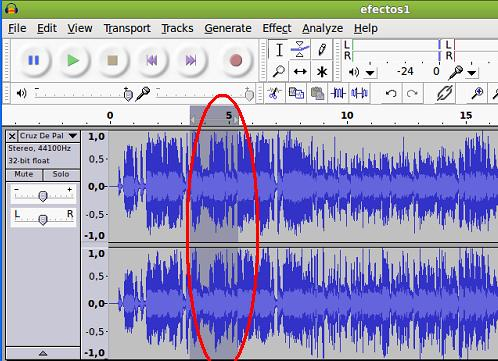
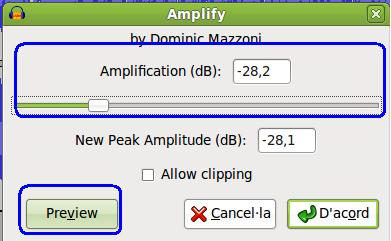
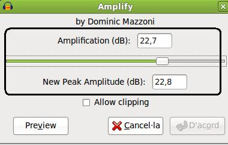
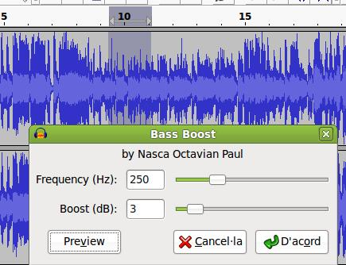
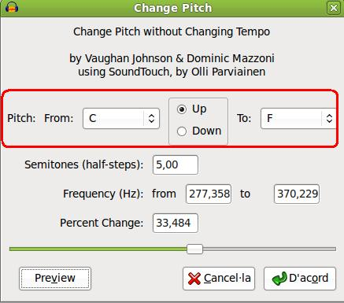
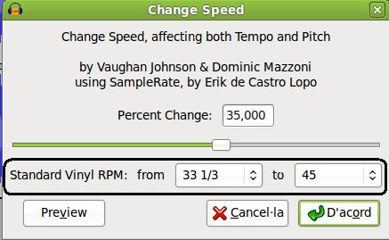

Edición de Audio y video
2.1. Proyecto ejemplo
- Abre el audacity y genera un proyecto nuevo.
- Importa una canción de audio a tu proyecto (cruz de palo.mp3, en nuestro caso).
-
Selecciona unos segundos (aprox. 3) en la línea de tiempo de la pista actual. Selecciona una zona donde la amplitud sea menor para apreciar la aplicación del primer efecto.

-
En el menu Effect (efectos), seleccionamos Amplify. Utiliza el deslizador o indica el valor en Amplification (db). Prueba con valores positivos y negativos. Haz clic en Preview para observar el resultado. En mi caso he aplicado 8 dB (amplification) y 8 dB en New Peak Amplitude (nuevo pico de amplitud), seleccionando Allow clipping (permitir recorte) para evitar la distorsión. Acepta.
| AMPLIFICAR | |
|  |  |
-
- Selecciona otra parte de la pista y aplica el efecto Amplify con otros valores.
- Seleccionamos unos segundos (en mi caso alrededor del segundo 10 de la pista de tiempo) y procederemos a disminuir los sonidos graves de nuestra canción. Queremos que se destace los agudos en esa zona. En efectos / Bass Boost (realce de graves) indicamos una frecuencia de 250 Hz (aprox.) y un realce (Boost) de 3 db. Observa la diferencia si cambias los valores a 500 Hz y 18 dB (suenan demasiado fuerte los bajos). Aplica el primer caso, tal como muestra la imagen.

-
Selecciona una parte de la pista en la que se aprecie la vocalización del cantante. La idea es modificar el tono de su interpretación. En mi canción, el intérprete está cantando en la escala do, procedemos a cambiar su tono (ascendente) de Do hasta Fa (C hasta F, utilizando el sistema americano). Utiliza el Preview para modificar alguno de los valores si lo deseas y aplica el mismo.

- Selecciona unos 5 segundos en zonas donde no haya vocalización del interpréte (a ser posible). Utiliza el efecto Cambiar de velocidad de 33 rpm a 45 rpm. Copia y pega en la misma pista la zona que has modificado la velocidad. Reproduce la nueva linea de tiempo y observarás, claramente, las ediciones realizadas.

- Selecciona unos segundos y aplica el eco con un retraso de 1 segundo y un factor de decaimiento de 0,5.
- Guarda el proyecto como efectos1.aup y exporta el resultado de la edición a un fichero tipo mp3.
- Reproduce el mismo para apreciar los efectos.
En la medida que vayas aplicando efectos procede a salvar (guardar) tu proyecto por si te ocurre un error inesperado y se pierde todo el trabajo realizado.
Si en la aplicación de los efectos mostrados en este apartado has
tenido algún problema o duda, en la forma en la que se aplican puedes consultar en la zona inferior.
Jo.R.C.A. 2004 - 2011

Edición de Audio y Video con Software Libre by José Ramón Cerdeira Alonso is licensed under a Creative Commons Reconocimiento-No comercial-Compartir bajo la misma licencia 3.0 España License